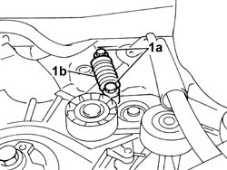
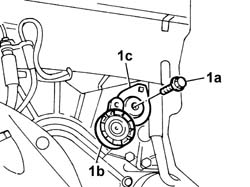
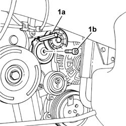
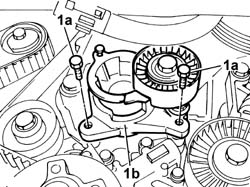

1092G15 ENGINE COMPONENT SINGLE BELT MOBILE TEMPERATURE - R RWITH BELT REMOVED
- Path
- Procedures > 10 ENGINE > 1092 ENGINE COMPONENT MISCELLANEOUS DRIVES > 1092G SINGLE DRIVE BELT FOR VARIOUS ENGINE COMPONENTS > 1092G15 ENGINE COMPONENT SINGLE BELT MOBILE TEMPERATURE - R RWITH BELT REMOVED
- Kind
- repair procedure (removal / refitting; the operation number is the code)
- Applies to
- all engines; all production periods
- Interactive page
- https://sloeber94.github.io/elrnDB-fUlss/en/#/179007210
Applies to: engines: 3.0 24V V6; all production periods
 Removing
Removing
 Refitting
Refitting1. Undo the fixing bolts (1a) and remove the moving tensioner spring (1b).

Applies to: engines: 3.0 24V V6; all production periods
1. Undo the fixing bolt (1a) and remove the moving tensioner (1b) with mount (1c).

Applies to: engines: 3.0 24V V6; all production periods
Refitting
Removing- Fit the mobile tensioner with mount and tighten the retainining bolt to the recommended torque.
 | Value - daNm | Fastening | Component | Ø |
|---|---|---|---|---|
. | 6 | Bolt | ENGINE COMPONENT SINGLE BELT TENSIONER - R.R. | - |
- Place the mobile tensioner spring in position and tighten the fixing bolts to the recommended torque.
| Value - daNm | Fastening | Component | Ø |
|---|---|---|---|---|
. | 2.5 | Bolts | ENGINE COMPONENT SINGLE BELT TENSIONER - R.R. | - |
Applies to: engines: 2.0 16V JTD, 2.2 16V JTD; all production periods
Removing
RefittingRemove the pin (1a), undo the fixing bolt (1b) and remove the auxiliary drive belt mobile tensioner (1c).

Applies to: engines: 2.0 16V JTD, 2.2 16V JTD; all production periods
Refitting
RemovingFit the auxiliary shaft drive belt mobile tensioner.
Pretighten all the bolts to the specified torque.
Values in Nm | Fastening | Component | Ø | |
|---|---|---|---|---|
- | 2 | Bolt | AUXILIARY DRIVEBELT CAM TENSIONER | - |
Then tighten the bolt to torque.
Value daNm | Fastening | Component | Ø | |
|---|---|---|---|---|
- | 4,5 | Bolt | AUXILIARY DRIVEBELT CAM TENSIONER | - |
Reposition the tensioner until the pin can be repositioned.
Applies to: engines: 2.0 16v; all production periods
Removing
Refitting1. Undo the fixing bolts (1a) and remove the moving tensioner (1b).

Applies to: engines: 2.0 16v; all production periods
Refitting
Removing- Place the moving tensioner in position and tighten the fixing bolts.